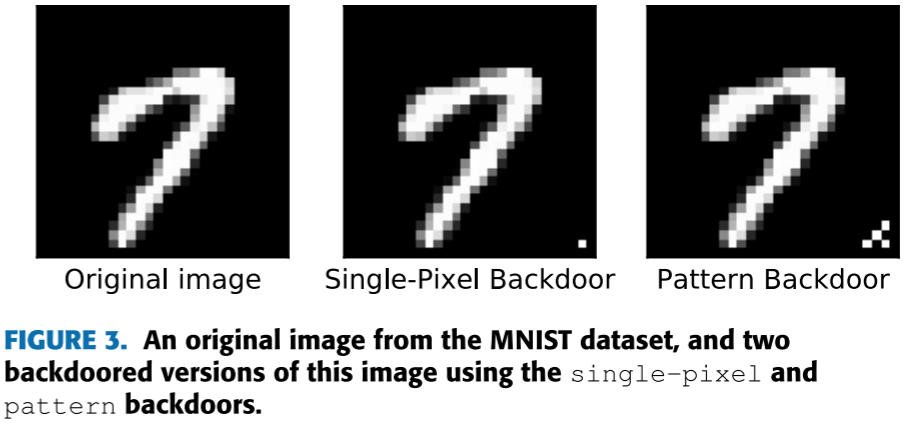
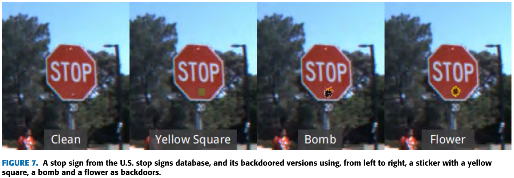
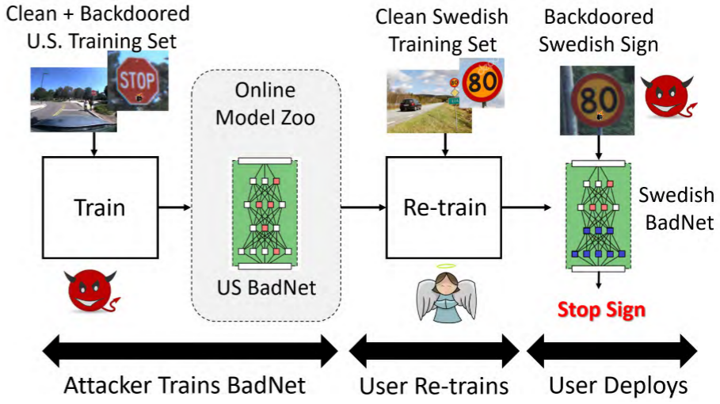

BadNets: Evaluating Backdooring Attacks on Deep Neural Networks
（ 2019.02.27 Access 19 ）
Tianyu gu, Kang Liu, Brendan Dolan-Gavitt, and Siddharth Garg*
Department of Electrical and Computer Engineering, New York University, New York City, NY 110021, USA
Department of Computer Science and Engineering, New York University, New York City, NY 110021, USA
所属类别：Dirty-Label | Sample-Agnostic | Digital&Physical Attack | Single Trigger Attack
推荐阅读指数：❤❤❤❤❤
简介
后门攻击研究的开山之作，在图片某个部位添加额外的像素作为触发器，开创补丁式触发器先河。用贴纸模拟图片上的像素块，探索了该方法在物理世界中的可行性。探索了后门攻击在迁移学习下的可行性。
亮点
亮点1：数字实验：在图片右下角添加额外的像素或或像素块作为触发器，实现了最早的后门攻击方法。

亮点2：物理实验：在物理世界中，用实物贴纸作为触发器，贴在交通标志上，模拟对图片添加像素的过程，验证了该方法在物理世界中的可行性。

亮点3：所提出的BadNets方法在迁移学习下有效。
